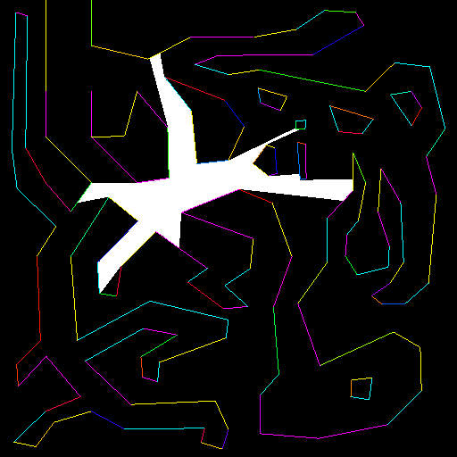
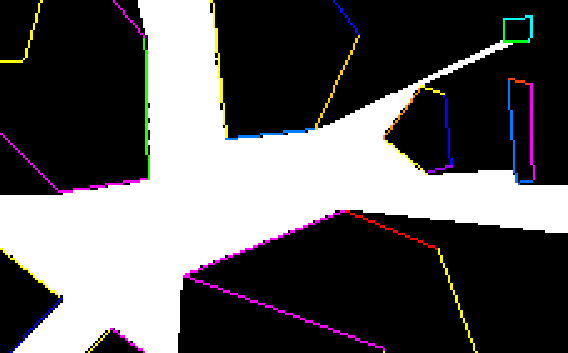
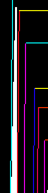
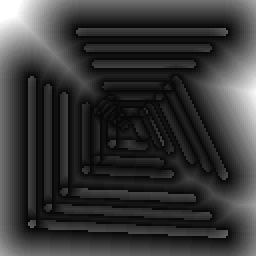
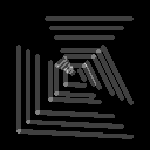

By comparison, using distance fields takes around ~4ms. So why don't we just use distance fields for everything?
Put bluntly, they aren't precise. Let's have a look:

A suspiciously good looking visibility trace
A suspiciously good looking visibility trace
You might look at this and go, what's the problem, it looks fine?
Well this 512x512 image needed a 512x512 distance field texture to look correct.
What happens if we decrease the resolution and zoom in.
512x512
Reasonable

256x256
Less good...
256x256
Less good...
128x128
Unforgivable
The other problem, even at higher resolutions are thin tunnels:

All the resolution in the world won't save you from progressing too slowly.
All the resolution in the world won't save you from progressing too slowly.
If you only need a very coarse visibility test for something like an AI, maybe this is fine.
Likewise if you're only concerned with what's on the screen (for instance ambient shadows), you can generate a screen-sized DF from a BVH very quickly per frame.
## Creating A Hybrid Ideally, we would be able to evaluate a distance field, up until we're near some geometry, then do proper line-ray intersections.
The immediate reaction to this idea is "I'm not storing a list of lines per pixel", an understandable response.
But when you consider there is only a certain amount of unique sets of lines, this starts to sound more do-able.
The pixel format I've chosen has the following layout: ```c struct Pixel { u8 distance; // df component u8 numLines; // lines to intersect u16 offset; // offset to where lines start in a buffer. }; ``` Even better, if we ignore the distance to lines that we'd be intersecting, we effectively get to bypass the tunnel issue.
For my implementation, I capture every line that is within 2 pixels distance.
And here is a visualisation of the df and numlines components:

df
df

numlines
numlines
The order of operations are:
- For each pixel, evaluate the distance to non-captured lines, adding the captured lines to a set.
- Write the set to a buffer.
- Insert the buffer offset back into the image.
When using a resolution of 128x128, that ~10ms raytracing time now takes around ~4ms, putting it on par with pure distance field tracing.
The obvious limitation here is that you wouldn't really want to generate this per frame, since it is a bit expensive.
The traversal can be summed up to: ```c // Cache to prevent evaluating the same ranges uint currentCacheKey = 0u; bool hit = true; bool done = false; while(!done) { uint numLines = 0; uint offset = 0; // Find the next intersection bucket for(;numIterations < maxSteps; ++numIterations) { if((distTravelled >= maxDist) || (min(uv.x, uv.y) < 0.0) || (max(uv.x, uv.y) > 1.0)) { hit = false; break; } ivec2 coord = ivec2(uv * dfTextureRes); uint texelData = texelFetch(dfTexture, coord, 0).x; float dist = float(texelData & 0xff) / 255.0; distTravelled += dist; numLines = (texelData >> 8) & 0xff; offset = texelData >> 16; uv += rd * dist; if(numLines > 0) { // Don't intersect the same data twice. uint cacheKey = texelData >> 8u; if(currentCacheKey == cacheKey) { numLines = 0u; } else { currentCacheKey = cacheKey; } } if(numLines > 0) { break; } } if(numLines == 0) { done = true; break; } // Run intersections uint start = offset; uint end = offset + numLines; for(; start < end; ++start) { // ... do line-line intersection ... if(intersects) { done = true; } } } ```
As always, here is a live demo
Resolution
DF Resolution
Draw lines
Vis Type
Scene